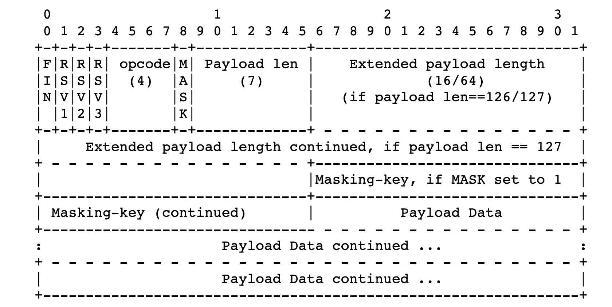

【Apr】AWEIM->WebSocket
本章节太长，提供一个太长不看版：https://juejin.im/post/5aae10adf265da239c7b2443
另外一个RFC6455的全文中文翻译：https://juejin.im/post/5c6b7366e51d45016527d648
，有比较多的错别字和翻译错误，遇到看不懂的需要查英文原文。
比较详细的通过RFC6455来讲解websocket协议的以下几个方面的具体内容
Websocket URI
Open/Close handshake
Data Framing
安全模型
源码角度理解与TCP和HTTP的关系
WebSocket URIs
websocket协议下的URI有两种开头：”ws” 和
“wss”。前者的默认端口号是80，后者是443。使用”wss”的方案就可以称这个URI是安全的【并且已经设置了安全标记】。
URI的resource name可以使用如下字符规则来构建：
"/"，表示路径（path）字段为空
路径（path）字段
"?"，表示非空的查询参数（query）
空查询参数（query）
Fragment identifiers在websocket的URIs里面是无意义并且不允许使用的。
Open/Close handshake
Connection建立的初始状态是Connecting。客户端需要提供：host，port，resource-name，secure以及protocol，extensions等字段，如果是一个web浏览器，还需要提供origin。
如果客户端跟某个远程host（ip
address）建立了链接，即便这个服务器还有别的ip，也必须等待当前这个链接结束才能建立新的链接。处于Connecting状态的链接最多只能有一个，如果存在同时发起多个链接的可能性，客户端需要处理这些并发，使其成为串行。
如果客户端不能确定服务器的IP地址，比如我们有两个域名，可能最终DNS解析结果为统一个ip，客户端本地必须对这种情况进行兜底，我们默认向每一个域名申请建立websocket的时候的前提是不同的域名对应的ip是不同的，即对应不同的主机，但是最终的结果可能不是这样的，所以客户端需要对所有发起websocket、并且不确定ip的的链接行为进行数量上的约束，防止：对30个不同的域名申请建立链接，但是最终30个域名解析的ip相同，从而进行了30个串行请求，这种情况需要客户端自行处理。另外一个例子是一个浏览器的多个tab跟同一个ip建立websocket。
但是，注意：客户端可以与单个主机建立的WebSocket连接数量是没有限制的。当建立的连接过多时，server可以拒绝和主机/IP地址建立的连接，同时server在负载过高时也可以主动断开占用资源的连接。
如果连接没有被打开，或者由于直连失败或者代理返回了一个错误，那么客户端必须断开WebSocket连接，并且停止重试连接。
如果安全（secure）字段存在，客户端必须在连接建立以后、发送握手数据之前进行TLS握手。如果TLS握手失败（比如server正数没有验证通过），那么客户端必须断开WebSocket连接。否则，所有后续的在此频道上面的数据通信都必须在加密的通道中传输。
一旦到server的连接被建立了（包括通过一个代理或者通过一个TLS加密通道），客户端必须发送一个开始握手的数据包给server。这个数据包由一个HTTP
Upgrade请求构成，包含一系列必须的和可选的header字段。握手的具体要求如下所示：
握手必须是一个在RFC2616指定的有效的HTTP请求。
这个请求方法必须是GET，而且HTTP的版本至少需要1.1。
例如：如果WebSocket的URI是"ws://example.com/chat"，那么发送的请求头第一行就应该是"GET
/chat HTTP/1.1"。
请求的"Request-URI"部分必须与第三章中定义的资源名称（resource
name）匹配，或者必须是一个http/https绝对路径的URI，当解析URI时，有一个资源名称（resource
name）、主机（host）和端口（port）与相对应的ws/wss匹配。
请求必须包含Host
header字段，它包含了一个主机（host）字段加上一个紧跟在":"之后的端口（port）字段（如果端口不存在则使用默认端口）。
这个请求必须包含Upgrade header字段，它的值必须包含"websocket"。
请求必须包含一个Connection header字段，它的值必须包含"Upgrade"。
请求必须包含一个名为Sec-WebSocket-Key的header字段。这个header字段的值必须是由一个随机生成的16字节的随机数通过base64（见RFC4648的第四章）编码得到的。每一个连接都必须随机的选择随机数。
注意：例如，如果随机选择的值的字节顺序为0x01 0x02 0x03 0x04 0x05 0x06
0x07 0x08 0x09 0x0a 0x0b 0x0c 0x0d 0x0e 0x0f
0x10，那么header字段的值就应该是"AQIDBAUGBwgJCgsMDQ4PEC=="。
如果这个请求来自一个浏览器，那么请求必须包含一个Originheader字段。如果请求是来自一个非浏览器客户端，那么当该客户端这个字段的语义能够与示例中的匹配时，这个请求也可能包含这个字段。这个header字段的值为建立连接的源代码的源地址ASCII序列化后的结果。通过RFC6454可以知道如何构造这个值。
例如，如果在www.example.com域下面的代码尝试与ww2.example.com这个地址建立连接，那么Origin字段的值就应该是\"www.example.com\"。
这个请求必须包含一个名为Sec-WebSocket-Version的字段。这个header字段的值必须为13。
这个请求可能会包含一个名为Sec-WebSocket-Protocol的header字段。如果存在这个字段，那么这个值包含了一个或者多个客户端希望使用的用逗号分隔的根据权重排序的子协议。这些子协议的值必须是一个非空字符串，字符的范围是U+0021到U+007E，但是不包含其中的定义在RFC2616中的分隔符，并且每个协议必须是一个唯一的字符串。ABNF的这个header字段的值是在RFC2616定义了构造方法和规则的1#token。
这个请求可能包含一个名为Sec-WebSocket-Extensions字段。如果存在这个字段，这个值表示客户端期望使用的协议级别的扩展。这个header字段的具体内容和格式具体见9.1节。
这个请求可能还会包含其他的文档中定义的header字段，如cookie（RFC6265）或者认证相关的header字段如Authorization字段（RFC2616）。
客户端接收到到server的响应后：
检查状态码是不是101。401需要验证，3xx需要重定向等等。
检查response的Upgrade字段是不是”websocket”。
检查Connection字段是不是”Upgrade”
检查Sec-WebSocket-Accept字段的值是不是我们发送的请求里的Sec-WebSocket-Key和一个魔数（258EAFA5-E914-47DA-95CA-C5AB0DC85B11）串联以后base
64编码后sha-1编码的值。
如果response里有Sec-WebScoket-Extensions字段，并且值在客户端发送的请求里不存在，则必须关闭连接。同理Sec-WebSocket-Protocol。
如果通过了以上校验，则连接已经建立，进入了OPEN状态。另外，如果server的response里有任何字段标志要设置cookie，则这个cookie被称为server握手期间的cookie（？）。
server的要求
略
Data Framing
前面我们介绍了很多字段，但是没有一个清晰直观的查看。

FIN：1bit。finish的意思，决定这个frame是不是某个message的最后一个fragment，第一个fragment也有可能是最后一个。
RSV1, RSV2, RSV3：各1bit。 一般是0，除非server和前端有约定。
Opcode：4bits。 Operation
code，解释了payload里的数据是什么类型的数据，如果收到了一个未定义的opcode的frame，连接必须失败。
%x0 表示一个持续帧【continuation frame】【供fragmentation使用】
%x1 表示一个文本帧
%x2 表示一个二进制帧
%x3-7 预留给以后的非控制帧
%x8 表示一个连接关闭包
%x9 表示一个ping包
%xA 表示一个pong包
%xB-F 预留给以后的控制帧
Mask：1bit。定义payload是否被mask过。如果设置为1，则mask
key设置在masking-keying里，mask-key用来unmask。注意：从客户端发往server的frame，都必须进行mask。
Payload
length：7bits，7+16bits，7+64bits。区分使用位数的方法是：如果前7bits是0-125，则只有7bits，如果是126，则接下来16bits也应计算。如果是127，则接下来64bits都应计算。
Payload data: (x+y) bytes。载荷指扩展数据和应用数据。
扩展数据是指在hand-shake阶段，扩展协议定义的扩展数据长度内存放的数据
应用数据：略
Client-to-server masking
从客户端发往server的frame必须对数据进行mask，使用masking-key进行mask。
Masking-key是一个由客户端选择的32bits的随机数据，Masking-key必须来自一个熵足够大的数据源，必须不容易预测，Masking-key的不可预测性对于预防恶意应用在网上暴露相关的字节数据至关重要。
Masking-key不影响payload-data的长度，mask和unmask的转换算法是一致的。
Octet i of the transformed data ("transformed-octet-i") is the XOR of
octet i of the original data ("original-octet-i") with octet at index
i modulo 4 of the masking key ("masking-key-octet-j"):
j = i MOD 4
transformed-octet-i = original-octet-i XOR masking-key-octet-j
Fragmentation（分片）
网络协议的fragmentation大同小异，最主要的一点就是无需buffer整个消息，就可以立即开始发送，在到达分片大小后即开始fragmentation；如果没有fragmentation，就需要buffer整个消息，然后进行counting。其次就是fragmentation有利于多路复用的效率提升，防止某个大数据帧长时间占据信道。
主要看下WebSocket协议下针对fragmentation作出具体规定：
一个未分片的消息包含一个设置了FIN字段（标记为1）的单独的帧和一个除0以外的操作码【一定非持续帧】。
一个分片的消息包含一个未设置的FIN字段（标记为0）的单独的帧和一个除0以外的操作码【标记为非持续帧】，然后跟着0个或者多个未设置FIN字段的帧和操作码为0的帧【标记为持续帧】，然后以一个设置了FIN字段以及操作码为0的帧结束。一个分片的消息内容按帧顺序组合后的payload字段，是等价于一个单独的更大的消息payload字段中包含的值；然而，如果扩展字段存在，因为扩展字段定义了Extension
data的解析方式，因此前面的结论可能不成立。例如：Extension
data可能只出现在第一个片段的开头，并适用于接下来的片段，或者可能每一个片段都有Extension
data，但是只适用于特定的片段。在Extension
data不存在时，下面的示例演示了消息分片是如何运作的。
示例：一个文本需要分成三个片段进行发送，第一个片段包含的操作码为0x1并且未设置FIN字段，第二个片段的操作码为0x0并且未设置FIN字段，第三个片段的操作码为0x0并且设置了FIN字段。
控制帧可能被插入到分片消息的中间。控制帧不能被分片。
消息片段必须在发送端按照顺序发送给接收端。
除非在扩展中定义了这种嵌套的逻辑，否则一条消息分的片不能与另一条消息分的片嵌套传输。
任意一端都必须有能力来处理在分片的消息中的控制帧。
发送端可能会创建任意大小的非控制消息片段。
客户端和server必须同时支持分片和不分片消息。
控制帧不能被分片，并且代理不允许改变控制帧的片段。
如果有保留字段被使用并且代理不能理解这些字段的值时，那么代理不能改变消息的片段。
在扩展字段已经被协商过，但是代理不知道协商扩展字段的具体语义时，代理不能改变任意消息的片段。同样的，扩展不能看到WebSocket握手（并且得不到通知内容）导致WebSocket的连接禁止改变连接过程中任意的消息片段。
作为这些规则的结论，所有的消息片段都是同类型的，并且设置了第一个片段的操作码（opccode）字段。控制帧不能被分片，所有的消息分片类型必须是文本或者二进制，或者是保留的任意一个操作码。
允许插入控制帧的现实意义在于，如果在发送大批量数据中收到了对方的心跳ping包，如果不能即使响应pong包，后果是未知的。
控制帧
控制帧是通过操作码最高位的值为1来进行区分的。当前已经定义的控制帧操作码包括0x8（关闭），0x9（心跳Ping）和0xA（心跳Pong）。操作码0xB-0xF没有被定义，当前被保留下来做为以后的控制帧。
控制帧是用于WebSocket的通信状态的。控制帧可以被插入到消息片段中进行传输。
所有的控制帧必须有一个126字节或者更小的负载长度，并且不能被分片。
关闭帧
关闭帧可能包含内容（body）（帧的”应用数据”部分）来表明连接关闭的原因，例如某一端（end-point）的断开，或者是某一端收到了一个太大的帧，或者是某一端收到了一个不符合预期的格式的内容。如果这个内容存在，内容的前两个字节必须是一个无符号整型（按照网络字节序）的状态码。跟在这两个整型字节之后的可以是UTF-8编码的的数据值（原因），数据值的定义不在此文档中。数据值不一定是要人可以读懂的，但是必须对于调试有帮助，或者能传递有关于当前打开的这条连接有关联的信息。数据值不保证人一定可以读懂，所以不能把这些展示给某一端用户。
状态码：
1000 表示一个normal closure，意味着连接建立的目标已经完成了。
1001
表示某一端已经going-away（离开），例如服务器停机了或者在浏览器中离开了这个页面。
1002 表示某一端由于协议错误（protocol error）中止了连接。
1003
表示某一端由于收到了一个不支持的数据类型的数据（如某一端只能理解文本数据，但是收到了一个二进制数据）从而关闭连接。
1004 保留字段。
1005
是一个保留值并且不能被某一端设置为一个关闭帧的状态码。这个状态码是为了给上层应用表示当前没有状态码。
1006
是一个保留值并且不能被某一端设置为一个关闭帧的状态码。这个状态码是为了给上层应用表示连接被异常关闭如没有发送或者接受一个关闭帧这种场景的使用而设计的。
1007 表示某一端因为收到了类型不连续的消息（如非 UTF-8
编码的文本消息）导致的连接关闭。
1008
表示某一端是因为收到了一个违反政策（policy）的消息导致的连接关闭。这是一个通用的状态码，可以在没有什么合适的状态码（如
1003 或者 1009）时或者可能需要隐藏关于政策的具体信息时返回。
1009 表示某一端由于收到了一个太大的消息无法进行处理从而关闭连接。
1010
表示某一端（客户端）因为预期与server协商一个或者多个扩展，但是server在
WebSocket
握手中没有响应这个导致的关闭。需要的扩展清单应该出现在关闭帧的原因（reason）字段中
1011
表示server因为遇到了一个意外的条件阻止它完成这个请求从而导致连接关闭。
1015
是一个保留值，不能被某一端设置为关闭帧的状态码中。这个状态码是用于上层应用来表示连接失败是因为
TLS 握手失败（如server证书没有被验证过）导致的关闭的。
关闭帧也需要mask。
应用禁止在发送了关闭的控制帧后再发送任何的数据帧。
如果某一端收到了一个关闭的控制帧并且没有在以前发送一个关闭帧，那么某一端必须发送一个关闭帧作为回应。（当发送一个关闭帧作为回应时，某一端通常会输出它收到的状态码）响应的关闭帧应该尽快发送。某一端可能会推迟发送关闭帧直到当前的消息都已经发送完成（例如：如果大多数分片的消息已经发送了，某一端可能会在发送关闭帧之前将剩余的消息片段发送出去）。然而，已经发送关闭帧的某一端不能保证会继续处理收到的消息。
在已经发送和收到了关闭帧后，某一端认为WebSocket连接以及关闭了，并且必须关闭底层的TCP连接。server必须马上关闭底层的TCP连接，客户端应该等待server关闭连接，但是也可以在收到关闭帧以后任意时间关闭连接。例如：如果在合理的时间段内没有收到TCP关闭指令。
如果客户端和server咋同一个时间发送了关闭帧，两个某一端都会发送和接收到一条关闭的消息，并且应该认为WebSocket连接已经关闭，同时关闭底层的TCP连接。
Ping帧
Ping帧是opcode为0x9的帧，可以含有应用数据。
如果收到了一个心跳Ping帧，那么某一端必须发送一个心跳Pong
帧作为回应，除非已经收到了一个关闭帧。
ping帧和pong帧用来验证远端是否仍然有应答。
Pong帧
Pong帧可以被主动发送。这会作为一个单项的心跳。预期外的Pong包的响应没有规定。
数据帧
数据帧的opcode的最高位为0，包含两种opcode：0x1（文本）、0x2（二进制），opcode决定了数据解析的方式。
文本：使用utf-8编码的文本数据，特殊文本帧可能包含部分utf-8序列，但是整个消息必须可以被解码，如果无法解码，则关闭连接。
二进制：payload字段是任意的二进制数据，仅依赖应用层解析数据。
Close connection
关闭的时候应该由客户端处于TIME_WAIT的状态，这样server在接收到一个序号比较大的SYN帧的时候可以快速reopen。
one would call shutdown() with SHUT_WR on the socket, call recv() until
obtaining a return value of 0 indicating that the peer has also
performed an orderly shutdown, and finally call close() on the socket.
Start Closing
发送一个带有status code的close控制帧来发起close
handshake，如果两边都收到了close
handshake，则直接关闭。发送close控制帧以后，进入closing状态。
WebSocket 连接的关闭可能是同时由另一个终端发起。
Connection Closed
TCP连接closed是websocket connection closed的标志。此时websocket
connection处于Closed状态，注意，没有建立连接前的websocket
connection也是处于closed状态。意即：进入closed状态后可能在任意时刻状态变更为Connecting。
Fail the WebSocket Connection
某些特定的场景下需要 _Fail 一个websocket
connection。为了做到这一点，客户端需要：1.关闭connection。2.上报给user。服务端需要：1.关闭connection。2.log这一次关闭。
Abnormal closures
在数据等方面出现诸多不符合规范的行为时，客户端/Server会主动关闭连接，成为abnormal
closure。
如果是一个临时的错误导致的，需要提供一种机制来从异常中恢复。可以使用二进制指数退避的方法来尝试重新连接。
安全模型
https://juejin.im/post/5c556541f265da2da23d019d 这篇翻译没啥问题。
SocketRocket建立/关闭WebSocket及接受消息的细节
open
- (void)open
{
assert(_url);
NSAssert(self.readyState == SR_CONNECTING, @"Cannot call
-(void)open on SRWebSocket more than once.");
_selfRetain = self;
if (_urlRequest.timeoutInterval > 0) {
dispatch_time_t popTime = dispatch_time(DISPATCH_TIME_NOW,
(int64_t)(_urlRequest.timeoutInterval * NSEC_PER_SEC));
dispatch_after(popTime, dispatch_get_main_queue(), ^{
if (self.readyState == SR_CONNECTING) {
NSError *error = SRErrorWithDomainCodeDescription(NSURLErrorDomain,
NSURLErrorTimedOut, @"Timed out connecting to server.");
[self _failWithError:error];
}
});
}
_proxyConnect = [[SRProxyConnect alloc] initWithURL:_url];
__weak typeof(self) wself = self;
[_proxyConnect openNetworkStreamWithCompletion:^(NSError *error,
NSInputStream *readStream, NSOutputStream *writeStream) {
[wself _connectionDoneWithError:error readStream:readStream
writeStream:writeStream];
}];
}
//不考虑Socks代理的情况下，SRProxyConnect的行为是：
- (void)_openConnection
{
[self _initializeStreams];
[self.inputStream scheduleInRunLoop:[NSRunLoop SR_networkRunLoop]
forMode:NSDefaultRunLoopMode];
//[self.outputStream scheduleInRunLoop:[NSRunLoop SR_networkRunLoop]
// forMode:NSDefaultRunLoopMode];
[self.outputStream open];
[self.inputStream open];
}
//初始化stream的过程
- (void)_initializeStreams
{
assert(_url.port.unsignedIntValue <= UINT32_MAX);
uint32_t port = _url.port.unsignedIntValue;
if (port == 0) {
port = (_connectionRequiresSSL ? 443 : 80);
//配置port
}
NSString *host = _url.host;
CFReadStreamRef readStream = NULL;
CFWriteStreamRef writeStream = NULL;
SRDebugLog(@"ProxyConnect connect stream to %@:%u", host, port);
CFStreamCreatePairWithSocketToHost(NULL, (__bridge
CFStringRef)host, port, &readStream, &writeStream);
self.outputStream = CFBridgingRelease(writeStream);
self.inputStream = CFBridgingRelease(readStream);
self.inputStream.delegate = self;
self.outputStream.delegate = self;
}